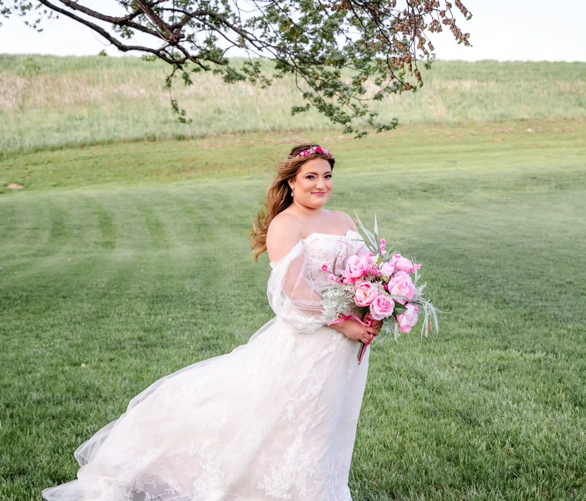

Meet Alyssa
About Alyssa Alexander

Kind, Fun, and Loving
Alyssa Alexander is a kind, fun, and loving person whose story is centered around family, empathy, creativity, and joy. She describes herself as a very caring person who is always there for the people around her. She is naturally motherly and empathetic, which helps her relate to others and makes her approachable. Alyssa values being someone people can count on, but she also has a silly and fun side that comes out when she is with her family and friends.
One of the most important experiences that has shaped Alyssa's life is becoming a mother. Being a mom is something she has wanted for her whole life, and it has become one of the most meaningful parts of who she is. She is proud of the family she has helped build, the parents she and her husband have become, and the way their son is growing up. More than anything, Alyssa is proud of the kind of mother she is.
Alyssa also has a creative and playful side. She loves to sing and wishes she had more time for music. Singing has always been meaningful to her because it gives her a healthy way to express her feelings and emotions. Recently, Alyssa has also started rug tufting with her husband, which has become a fun and creative hobby they can learn together. She has also started playing golf with him, and both hobbies are meaningful because they give them time together and help bring them closer.
Alyssa's current goal is to buy a home with her family so they can have their own space and possibly continue growing their family in the future. Her story is one of love, growth, creativity, and family. This bioSite shows both her caring side and her fun side, giving visitors a complete picture of who Alyssa Alexander is.
In Her Own Words
"I want people to get the full picture of who I am instead of just one side."